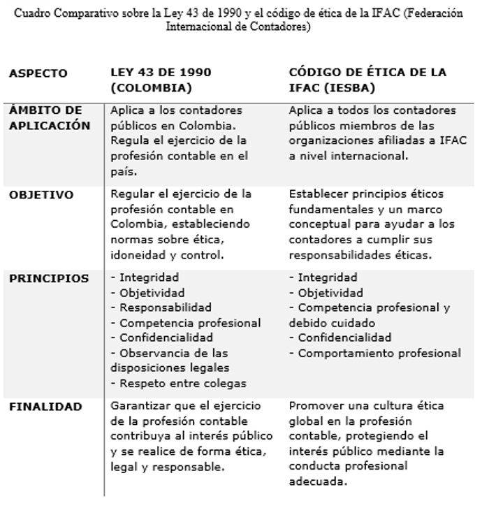
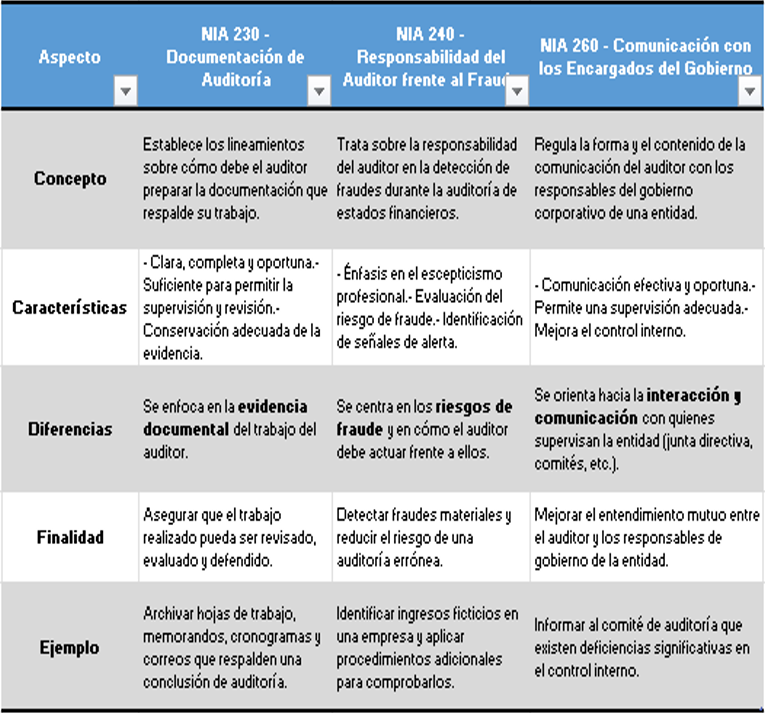

Tema 1
Cuadro comparativo de la fase 1
Mapa mental y cuadro comparativo de la fase 2
Cuadro comparativo de la fase 3
Ensayo de la fase 3
Ensayo Rol del contador público en el ámbito empresarial, financiero y de consultoría Estudiante: Luis Felipe Velasco Reyes / 14651925 Ética y responsabilidad social para la gestión de las organizaciones - Grupo: 106019_17
Introducción:
El contador público ha dejado de ser un simple registrador de operaciones contables para convertirse en un actor estratégico dentro de las organizaciones. En el contexto actual, caracterizado por un entorno cambiante, competitivo y altamente regulado, el rol del contador se ha ampliado hacia áreas como la gestión empresarial, la toma de decisiones financieras y la consultoría; este ensayo reflexiona sobre el impacto del contador público en estos tres ámbitos, destacando sus competencias, responsabilidades éticas y su papel como asesor confiable para los distintos actores económicos. A partir de este análisis, se argumenta que el profesional contable es hoy un pilar fundamental en el desarrollo sostenible y ético de las organizaciones.
Desarrollo:
En el entorno empresarial, el contador público desempeña una función mucho más amplia que la tradicional elaboración de balances o el registro contable, su intervención comienza desde la estructura misma de la organización, participando en la planeación estratégica, el diseño de políticas financieras, el control presupuestal y la gestión eficiente de los recursos; este enfoque más integral responde a una necesidad moderna: que las decisiones empresariales estén fundamentadas en datos reales, confiables y actualizados.
El contador actúa como puente entre la información financiera y la gerencia, interpretando cifras y generando alertas sobre posibles riesgos financieros o desviaciones presupuestales y su intervención ayuda a tomar decisiones más acertadas, permitiendo que las empresas sean más competitivas, sostenibles y éticas. Además, tiene la capacidad de implementar sistemas contables que mejoren la eficiencia operativa, utilizando tecnologías como ERP, software contable y herramientas de análisis de datos.
Desde mi perspectiva como estudiante de Contaduría Pública, he podido observar que muchas empresas, especialmente las pequeñas y medianas, subestiman la importancia del contador como asesor estratégico, sin embargo, aquellas que lo integran en sus decisiones de negocio, suelen tomar mejores decisiones financieras, cumplir sus obligaciones fiscales de manera adecuada y proyectar un crecimiento más estable.
En el ámbito financiero, el contador se convierte en el “ojo clínico” de la organización, ya que, a través del análisis de estados financieros, indicadores económicos y proyecciones, puede diagnosticar la situación real de una empresa. Su trabajo permite anticipar crisis, mejorar el manejo del capital de trabajo y proponer estrategias para aumentar la rentabilidad.
Uno de los retos actuales del profesional contable en este campo es adaptarse a los cambios tecnológicos y regulatorios, porque las Normas Internacionales de Información Financiera (NIIF) exigen un alto nivel de interpretación, ya que no se limitan a registrar operaciones, sino a valorar activos, estimar pérdidas y aplicar juicios profesionales. Esto requiere una preparación constante, ética y rigurosa.
El contador también debe tener la capacidad de analizar escenarios, prever los impactos de decisiones de inversión o financiamiento, y plantear alternativas viables, por ejemplo, puede asesorar sobre cómo enfrentar una reducción en los ingresos, qué estrategias adoptar frente a una alta rotación de inventarios, o cómo mejorar la relación con entidades financieras mediante la presentación clara de los resultados de la empresa.
En este sentido, el rol financiero del contador es más analítico que operativo, más estratégico que técnico, ya que la confianza que genera su trabajo puede influir directamente en la imagen crediticia de la empresa, en su relación con los inversores y en su capacidad de atraer recursos para el crecimiento.
El rol de consultor representa una evolución natural del contador tradicional. Hoy, muchas empresas demandan servicios de asesoría contable, tributaria, financiera y administrativa y el contador, gracias a su formación integral, está en la capacidad de brindar soluciones prácticas y efectivas ante desafíos como el cumplimiento normativo, la implementación de nuevas tecnologías, la reestructuración organizacional o la creación de nuevos emprendimientos.
Como consultor, el contador debe desarrollar habilidades blandas que complementen su conocimiento técnico: liderazgo, comunicación asertiva, escucha activa, negociación y resolución de conflictos, además, debe actuar con independencia mental, integridad profesional y sentido crítico. No se trata solo de resolver problemas puntuales, sino de identificar oportunidades de mejora a largo plazo.
Por ejemplo, un contador que asesora a una empresa familiar puede ayudar no solo a llevar la contabilidad al día, sino a establecer protocolos de gobernanza, definir políticas de sucesión y fortalecer la formalización del negocio. Así, su rol se convierte en una herramienta de desarrollo económico y social.
En mi experiencia personal, participando en negocios familiares, he notado que muchas veces se confunde la contabilidad con una simple obligación legal. Sin embargo, cuando se recibe asesoría contable y financiera profesional, se genera un cambio profundo en la mentalidad empresarial: se entiende mejor el flujo del dinero, se planifican inversiones con mayor certeza y se evitan riesgos que pueden ser costosos.
Historieta de la fase 4
Opinión personal de la fase 4

Actividad Colaborativa
Estudio de caso: Odebrecht
Luego de leer el caso Odebrecht, podemos entender como este representó uno de los mayores escándalos de corrupción en América Latina y el mundo, primero debemos saber que esta es una empresa brasileña, la cual es reconocida por su presencia en más de 25 países y su liderazgo en proyectos de infraestructura, se vio envuelta en una compleja red de sobornos entre los años 2001 y 2016, se estima que pagó alrededor de 788 millones de dólares a funcionarios públicos, partidos políticos y gobiernos de doce países, entre ellos Colombia, para asegurarse contratos multimillonarios, este hecho no solo reveló prácticas empresariales profundamente alejadas de la ética, sino que también evidenció las grandes debilidades institucionales de varios Estados latinoamericanos, como el nuestro.
Odebrecht creó una "División de Operaciones Estructuradas" la cual se destinó exclusivamente al pago de sobornos, ocultando sus movimientos a través de sofisticadas redes de cuentas offshore y sistemas de comunicación cifrada, la corrupción traspasó fronteras, comprometiendo presidentes, expresidentes y altos funcionarios de muchos países, quienes pusieron sus intereses personales por encima del bienestar común, estas consecuencias no tardaron en hacerse visibles: grandes proyectos de infraestructura fueron paralizados, se generaron pérdidas millonarias para los Estados, aumentó el desempleo y se agudizó la desconfianza ciudadana en las instituciones públicas.
Más allá de las sanciones económicas que recibió la empresa, el daño social y económico fue mucho más profundo, el caso Odebrecht como es conocido, nos demuestra cómo la corrupción frena el desarrollo, ahonda las brechas sociales y erosiona la credibilidad democrática, en respuesta, Odebrecht emprendió cambios en su estructura de gobernanza, implementando nuevas políticas de cumplimiento ético y cooperando con las investigaciones judiciales, aunque las cicatrices dejadas en las sociedades afectadas son aún visibles.
Reflexionar sobre este caso es fundamental porque evidencia la necesidad urgente de fortalecer los sistemas de control, de exigir mayor transparencia y de promover una cultura de integridad tanto en el sector público como en el privado, debemos entender con este caso, que la ética empresarial no puede ser un accesorio opcional: debe ser el pilar fundamental sobre el cual se construyan las actividades económicas y políticas si realmente se quiere alcanzar un desarrollo sostenible y justo. (Aporte Luis Felipe Velasco Reyes)
¿Cuál es el impacto que generó el caso Odebrecht en el desarrollo económico y social del país?
El impacto fue profundo como se analizó en el resumen, ya que generó la pérdida de confianza en las instituciones públicas, afectó el desarrollo de infraestructura clave (por paralización o retraso de obras), redujo la inversión extranjera y nacional, incrementó la desigualdad social y afectó la estabilidad política, la corrupción drenó y drena recursos públicos que debieron ser destinados a educación, salud e infraestructura, afectando directamente el bienestar social.
¿Qué principios éticos fueron vulnerados por la empresa y por qué?
La conducta de Odebrecht pisoteó principios éticos fundamentales para cualquier sociedad.
· La transparencia fue la primera víctima cuando la empresa ocultó sistemáticamente pagos ilícitos y falsificó sus estados financieros.
· La responsabilidad quedó en entredicho al priorizar ganancias corporativas por encima del bienestar colectivo y el respeto a nuestras leyes.
· La justicia fue burlada cada vez que un soborno aseguraba un contrato, robando oportunidades a empresas que jugaban limpio.
· La honestidad brilló por su ausencia en un puñado de mentiras y documentos adulterados que sostenían toda su operación en Colombia.
¿Cuál debía ser la responsabilidad del contador público en su función como auditor de la empresa?
En medio de esta tormenta ética, el papel del contador público como auditor cobra especial relevancia. Su misión va más allá de los números; representa una barrera crucial contra la corrupción. Un auditor íntegro habría detectado las alarmas en pagos injustificados o en costos inflados artificialmente. Su deber no era solo informar internamente sino alertar a las autoridades competentes ante indicios de irregularidades. La independencia profesional debió prevalecer sobre presiones corporativas, aplicando rigurosamente las normas internacionales y principios éticos inherentes a su profesión.
El caso Odebrecht nos recuerda que el contador no es un simple tenedor de libros, sino un veedor del uso adecuado de recursos y del cumplimiento normativo. Su firma no es una formalidad; es un sello de confianza pública cuyas implicaciones trascienden a toda la sociedad colombiana.
Árbol de problema de causas y efectos de la fase 3
Recomendaciones realizadas en la fase 3
10 recomendaciones que debe tener una organización para evitar los casos de fraude o corrupción desde las siguientes perspectivas
Revisor Fiscal
• Independencia y objetividad en la revisión de estados financieros: El Revisor Fiscal debe asegurar que su juicio no esté influenciado por intereses particulares de la administración o terceros. Debe aplicar normas técnicas y legales (como la Ley 43 de 1990 en Colombia) para detectar irregularidades y evitar el encubrimiento de fraudes.
• Implementación de controles antifraude: Debe evaluar y recomendar mecanismos de control interno que prevengan actos corruptos, como la segregación de funciones, autorizaciones jerárquicas y reconciliaciones periódicas de cuentas.
• Fortalecer la supervisión continua de transacciones críticas: El Revisor Fiscal debe implementar un sistema de monitoreo en tiempo real para transacciones de alto riesgo (ejemplo: pagos a proveedores no habituales, ajustes contables sin soporte). Esto incluye el uso de herramientas tecnológicas (como software de análisis de datos) para detectar patrones inusuales, alineado con la Ley 43 de 1990 (Colombia) y las NIA 240.
Asesor Financiero
• Transparencia en la información financiera: El asesor debe garantizar que los reportes y proyecciones financieras reflejen la realidad económica de la organización, evitando manipulación de datos para beneficio personal o de grupos específicos (Código de Ética del Contador Público, Sección 140).
• Capacitación en ética y cumplimiento normativo: Promover programas de formación para empleados y directivos sobre riesgos de corrupción, alineados con estándares internacionales como la Ley Sarbanes-Oxley (SOX) o normas locales (ej: Estatuto Anticorrupción en Colombia).
• Separación de funciones segregación de deberes: Desde la función de asesor financiero, se debe evitar que una sola persona tenga control total sobre un proceso financiero, para reducir el riesgo de fraude.
• Implementar políticas de conflicto de interés para directivos: El Asesor Financiero debe diseñar y divulgar políticas claras que obliguen a los directivos a declarar posibles conflictos de interés (ej: relaciones comerciales con familiares). Estas políticas deben revisarse anualmente y estar respaldadas por el Código de Ética de la IFAC (Sección 290) y el Estatuto Anticorrupción (Ley 1474 de 2011).
Auditor
• Enfoque en riesgos de fraude durante la auditoría: El auditor debe aplicar técnicas de muestreo y pruebas sustantivas para identificar transacciones inusuales o sin soporte, siguiendo normas como las NIA (Normas Internacionales de Auditoría) 240, que exigen escepticismo profesional.
• Comunicación proactiva de hallazgos: Reportar de manera inmediata cualquier indicio de fraude o corrupción a los órganos de gobierno (Comité de Auditoría, Junta Directiva), asegurando confidencialidad, pero sin omitir responsabilidades legales.
• Canales de denuncia confidenciales: crear canales seguros para que los empleados puedan reportar posibles casos de fraude o corrupción, estos pueden ser anónimos, de los cuales se debe promover la participación de los empleados en este espacio, o realizar una evaluación periódica al encargado en este caso el contador como profesional para conocer si este ha participado o promovido alguna acción ilegal.
• Evaluación de riesgo: Analizar e investigar exhaustivamente cuales son las áreas vulnerables dentro de la organización que puedan ser propensas al fraude, para implementar filtros que permitan detectar inconsistencias.
• Realizar auditorías sorpresa en áreas sensibles: El Auditor debe programar auditorías no anunciadas en departamentos con mayor exposición al fraude (ej: tesorería, compras). Estas auditorías deben incluir pruebas aleatorias de documentos físicos y digitales, siguiendo el enfoque de escepticismo profesional exigido por las NIA 240 y el material de la UNAD sobre prevención del fraude.
Elementos positivos y negativos de las prácticas del gobierno corporativo en la sostenibilidad empresarial de la fase 4
Elementos positivos y negativos del gobierno corporativo en la sostenibilidad empresarial
Elementos positivos
1. Integración de la responsabilidad social en la cultura organizacional
La responsabilidad social empresarial (RSE) puede institucionalizarse dentro de la cultura de la organización como una estrategia de sostenibilidad. (Trillo Espinoza, 2024), esto favorece la alineación de decisiones corporativas con valores sociales y ambientales.
2. Contabilidad ambiental como herramienta estratégica
Se señalan que la contabilidad ambiental puede mejorar la eficiencia energética, reducir costos, impulsar innovación en productos ecológicos y fortalecer la imagen corporativa. (Sánchez-Caguana, 2024)
Elementos negativos
1. Resistencia al cambio y falta de competencias
La adopción de contabilidad ambiental enfrenta limitaciones como resistencia organizacional, escasez de competencias y necesidad de inversión tecnológica. (Sánchez-Caguana, 2024)
2. Debilidad normativa y riesgo de discurso sin acción
Nos advierten que, en algunos casos, la responsabilidad social empresarial se limita a declaraciones bienintencionadas sin traducción real a acciones, lo que genera brechas entre la estrategia declarada y su ejecución. (Torres, 2023)
Analizando los aspectos positivos y negativos, podemos ver que los gerentes corporativos pueden impulsar la sostenibilidad cuando se implementa con integridad y visión de largo plazo, la integración de la responsabilidad social empresarial en la cultura organizacional refuerza el compromiso ético y social de la empresa, y alineando decisiones estratégicas con objetivos sostenibles. Siempre y cuando se cumpla con lo propuesto y no solo quede en deseos.
Asimismo, quiero destacar que la contabilidad ambiental no solo optimiza procesos y reduce costos, sino que también estimula la innovación y mejora la reputación corporativa. (Sánchez-Caguana, 2024)
Sin embargo, este mismo enfoque robusto puede verse limitado cuando el cambio choca con barreras tecnológicas o culturales, y las empresas no cuentan con la formación necesaria para implementarlo. Además, advierten que la RSE puede convertirse en meras afirmaciones sin impacto real si no se traduce en acciones concretas y medibles. (Torres, 2023)
En pocas palabras, el gobierno corporativo puede ser un motor de sostenibilidad, pero su efectividad depende de una implementación auténtica y sostenible, que supere tanto las resistencias internas como la superficialidad de compromisos no evaluados. Esto debe ir acompañado de seguimientos, de trazar más actividades que den resultados positivos a lo paneado, y estos permitan hacer cambios y mejoras en aras de lograr su fin.